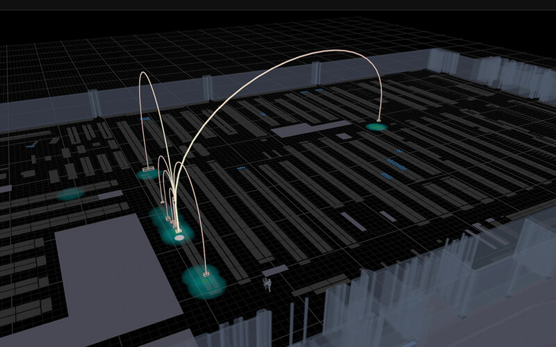
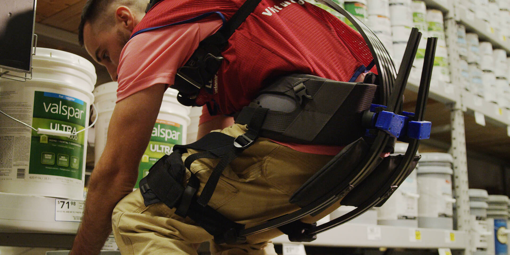
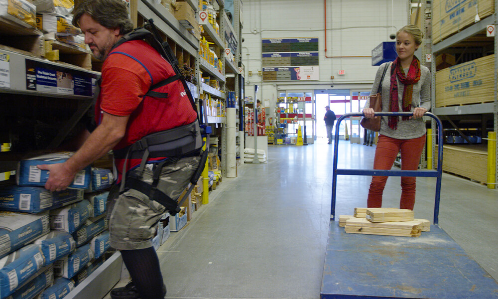
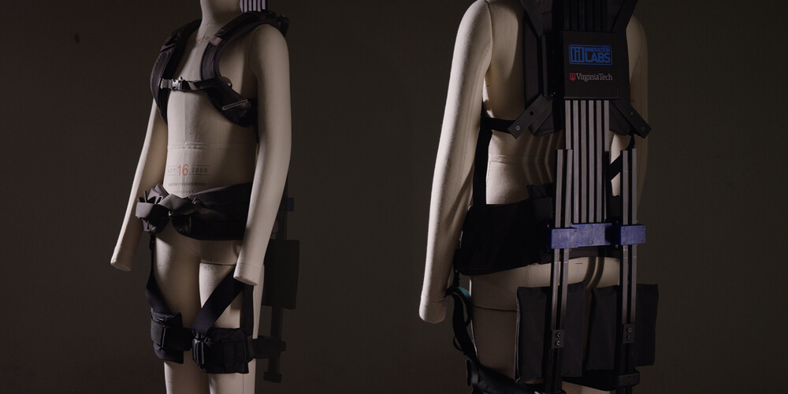
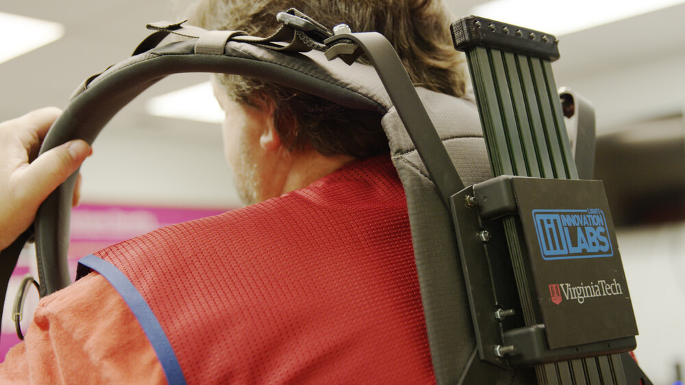

Future Stores
Enhancing associate performance and improving safety using soft robotic exoskeletons
One of Lowe's greatest assets is our associate workforce. At Lowe's Innovation Labs, we have a history of exploring emerging technologies that are designed to empower our associates.
Back in 2017, our team partnered with Virginia Tech to conduct a pioneering exploration around the use of soft robotic exoskeletons in a retail environment.
What it is
Lowe’s and Virginia Tech collaborated to develop an exosuit, a wearable soft robotic suit with lift-assist technology, designed especially for retail associates.
Lift and assist
Lowe’s stock employees are responsible for the critical task of unloading every truck delivery and moving all products onto the sales floor, during the day and throughout the night. They can spend up to 90% of their time at work moving and lifting freight.
Our soft robotic exosuit was designed to address this use case, correcting a user’s form and storing and returning energy to make lifting objects more ergonomic and easier.
We conducted a limited trial in our Christiansburg, VA store in 2017.

How it works
The Lowe’s exosuit was designed specifically to emphasize ergonomics, and to store and return power to an associate, potentially making them able to perform tasks with less exertion.
Featuring carbon fiber rods on the back and legs, a custom lift mechanism, and lightweight, conformable fabrics, the Lowe’s Innovation Labs team aimed to build a suit that would not only assist with living, but that would incentivize fluid, natural movements and be comfortable to wear.

The exosuit functioned in a manner similar to a bow and arrow, storing energy as a person bent down to lift and object, and returning it as they stood.
As a result, commonly lifted objects, like a bag of concrete or a five-gallon bucket of paint, would feel significantly lighter to the user.
